| University | [University Name] |
| Faculty | [Faculty Name] |
| Department | [Department Name] |
| Student | [Student Full Name] |
| Student ID | [Student ID] |
| Supervisor | [Supervisor Name and Academic Title] |
| Submission Date | [Month Year] |
Submitted in partial fulfillment of the requirements for the assigned university software project.
Darman Pharmacy Management System is a secure, single-branch web application designed to improve the daily operation of a community pharmacy. The project addresses recurring operational problems such as inaccurate stock records, weak expiry monitoring, slow sales processing, fragmented supplier information, and limited reporting. It replaces paper-based or spreadsheet-based work with a unified system that is suitable for pharmacy owners and staff with limited technical experience.
The proposed solution covers medicine and category management, batch-based inventory, low-stock and expiry alerts, point-of-sale processing, supplier management, purchase orders, role-based access, operational reports, and CSV or PDF exports. Sales deduct inventory atomically using First Expire, First Out allocation. Purchase receiving creates inventory batches and stock adjustment records in one protected transaction. Administrative, pharmacist, and cashier roles provide clear separation of responsibility.
The project is implemented with Next.js, TypeScript, Supabase PostgreSQL and Auth, Tailwind CSS, shadcn/ui, TanStack Query, React Hook Form, Zod, Recharts, and jsPDF. Row Level Security and database functions protect sensitive workflows. The release candidate has passed staging tests covering permissions, concurrent sales, rollback behavior, purchase receiving, reporting, exports, responsive layouts, and security headers. Production deployment remains dependent on applying the reviewed migrations, configuring production services, assigning backup ownership, and completing production smoke tests.
The work is planned as a twelve-week academic software project. Development labor is treated as the student's academic contribution, while the estimated direct project cost is USD 230 for connectivity, electricity, a domain, printing, testing, and contingency. The result is a practical monograph project that demonstrates requirements analysis, database design, secure full-stack development, quality assurance, and deployment planning.
Community pharmacies manage many fast-moving products with different batch numbers, prices, suppliers, and expiry dates. Daily decisions depend on knowing what is available, what is safe to sell, what must be reordered, and which stock should be used first. When these records are maintained manually, a small recording error can affect purchasing, sales, reporting, and customer service.
A pharmacy management system should therefore provide more than a medicine list. It should connect purchasing, batch inventory, sales, alerts, and reporting while preserving a clear record of each stock movement. It must also be simple enough for a cashier or pharmacist to learn quickly and secure enough to prevent unauthorized changes.
The aim of this project is to design, implement, test, and prepare for deployment a production-quality, single-branch pharmacy management system that supports core operational workflows without introducing clinical, insurance, or enterprise accounting functions.
For a pharmacy owner, the system provides a clearer view of sales, inventory value, purchase activity, low stock, and upcoming expiry. For pharmacists and cashiers, it reduces repeated manual calculations and improves access to current medicine availability. For the university, the project demonstrates the complete software development lifecycle using a realistic business case.
The project also creates a maintainable foundation for future improvement while deliberately limiting its first release to a manageable and testable operational scope.
| Stakeholder | Interest and Responsibility |
|---|---|
| Pharmacy owner or Admin | Controls users, settings, medicines, suppliers, purchases, sales, and reports. |
| Pharmacist | Manages operational data but cannot manage users or dangerous system settings. |
| Cashier | Processes sales and checks medicine availability without changing master or purchasing data. |
| University supervisor | Reviews the project's academic quality, design decisions, implementation, and evidence. |
| System maintainer | Applies migrations, manages deployments, monitors logs, and coordinates backups. |
The project follows an iterative development method. Work begins with scope definition and process analysis, followed by logical and physical database design. Features are then implemented in small modules, integrated through protected workflows, and verified with linting, type checking, production builds, browser tests, database tests, and staged user-role acceptance tests.
Each phase produces usable software and documentation. High-risk workflows such as sales, receiving, and role changes are tested at both the application and database layers before release.
The existing environment is assumed to use paper records, informal stock counting, spreadsheets, or separate applications for sales and purchasing. Such approaches can work for a very small inventory, but they become difficult to control as the number of products, batches, suppliers, and transactions increases.
Data is often re-entered into several records. A purchase may be recorded in a notebook, stock may be changed in a spreadsheet, and sales totals may be calculated separately. Because these records are not connected, managers cannot easily confirm whether a figure is complete or current.
| Area | Existing Limitation |
|---|---|
| Stock accuracy | Manual deductions and delayed updates can produce incorrect availability and purchasing decisions. |
| Expiry control | Expiry dates may be checked visually instead of through systematic, configurable warnings. |
| Batch traceability | The batch sold or received may not be connected to the related transaction. |
| Sales speed | Manual medicine lookup, calculations, and receipt preparation slow down checkout. |
| Supplier records | Contact information and order history can be scattered across notebooks or files. |
| Reporting | Sales, stock value, expiry exposure, and purchase totals require repeated manual calculations. |
| Access control | Shared spreadsheets or notebooks provide little separation between staff responsibilities. |
| Auditability | It may be unclear who changed stock, when it changed, and which workflow caused the change. |
| Data recovery | Paper can be lost and local files may not have a defined backup or recovery owner. |
A unified system is required to maintain one controlled operational record, connect stock movements to business transactions, reduce calculation errors, and provide timely information without overwhelming beginner users.
Darman is a responsive browser-based system for one pharmacy branch. It provides role-aware navigation and focused workflows for medicines, sales, suppliers, purchases, reports, settings, and dashboard analytics. The interface uses clear forms, searchable lists, confirmation dialogs, empty states, loading feedback, and actionable error messages.
The database is the authoritative source for protected business operations. The browser requests a sale or purchase action, while PostgreSQL validates the user's role, checks the current records, locks affected data where required, calculates trusted values, and commits all related changes together.
| Module | Proposed Capability |
|---|---|
| Dashboard and analytics | Daily and summary indicators, recent sales, low-stock alerts, expiry warnings, and a seven-day sales trend. |
| Medicine catalog | Categories, generic and brand details, dosage form, strength, barcode, prices, supplier, reorder level, and active status. |
| Batch inventory | Batch number, quantity, cost, selling price, received date, expiry date, and saleable-stock calculation. |
| Sales and POS | Search, barcode input, stock-aware cart, discount, payment method, atomic completion, history, receipt, and PDF printing. |
| Suppliers | Contact details, notes, active status, search, and purchase history. |
| Purchase orders | Draft creation, ordered status, cancellation, delivery confirmation, batch entry, and atomic receiving. |
| Reports | Sales, inventory, expiry, and purchase reports with filtering, search, pagination, CSV, and PDF export. |
| Users and settings | Role management for existing Auth users and pharmacy identity, currency, receipt, and expiry settings. |
| Role | Access |
|---|---|
| Admin | Full access to current application management, including users and settings. |
| Pharmacist | Operational access to medicines, inventory, sales, suppliers, and purchase orders; settings are read-only. |
| Cashier | Processes sales and views basic medicine availability; cannot change master, supplier, purchase, user, or settings data. |
| Requirement | Expected Standard |
|---|---|
| Usability | Common tasks must be understandable to a beginner user and remain usable on phone, tablet, and desktop widths. |
| Performance | Lists use search, sorting, filtering, and pagination suitable for a small-to-medium single-branch dataset. |
| Security | Authentication, route protection, role-aware interfaces, RLS, and database role checks must work together. |
| Integrity | Sales and receiving must be atomic so partial stock changes cannot remain after a failure. |
| Maintainability | Typed, validated, modular code and ordered database migrations must support controlled future releases. |
| Availability | The cloud-hosted system requires a stable internet connection and documented service ownership. |
The logical design describes what information enters and leaves the system, which processes transform it, and how the principal business entities relate. It is independent of detailed hosting or programming decisions.
External actors include Admin, Pharmacist, Cashier, Supplier, Supabase Auth, and a business reviewer. Major processes cover authentication, catalog and inventory management, sales, purchasing, reporting, and administration. Data stores represent users, catalog records, batches, sales, purchases, adjustments, and settings.
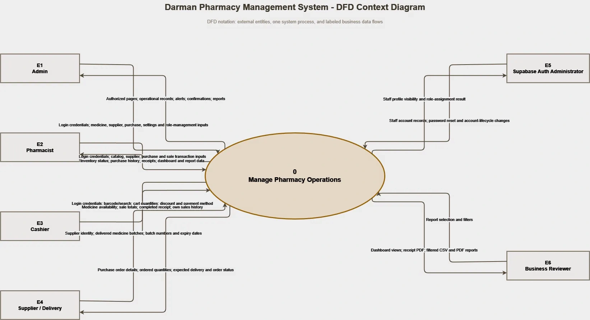
Figure 1. Context diagram showing the system boundary and its external actors.
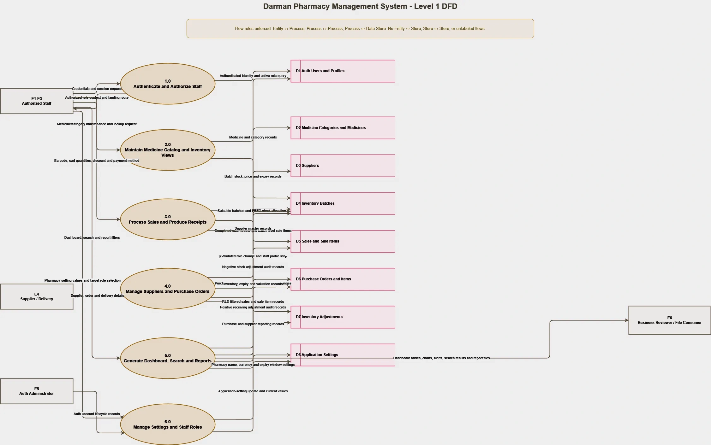
Figure 2. Level 1 DFD showing authentication, catalog, inventory, sales, purchasing, reporting, and administration processes.
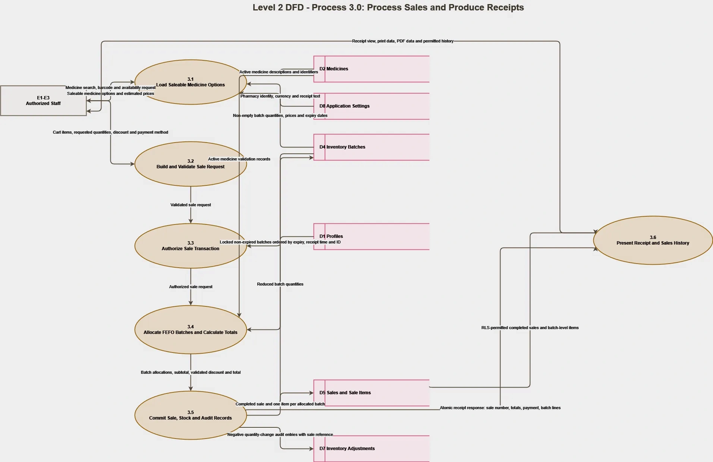
Figure 3. Level 2 sales DFD showing checkout validation, FEFO allocation, stock deduction, adjustment logging, and receipt generation.
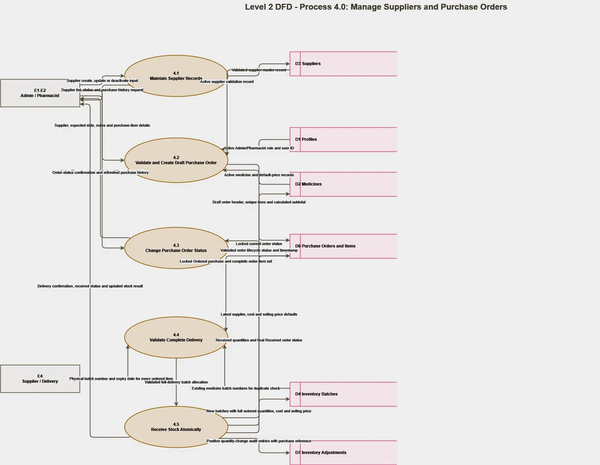
Figure 4. Level 2 purchasing DFD showing order creation, status control, delivery receiving, batch creation, and stock updates.
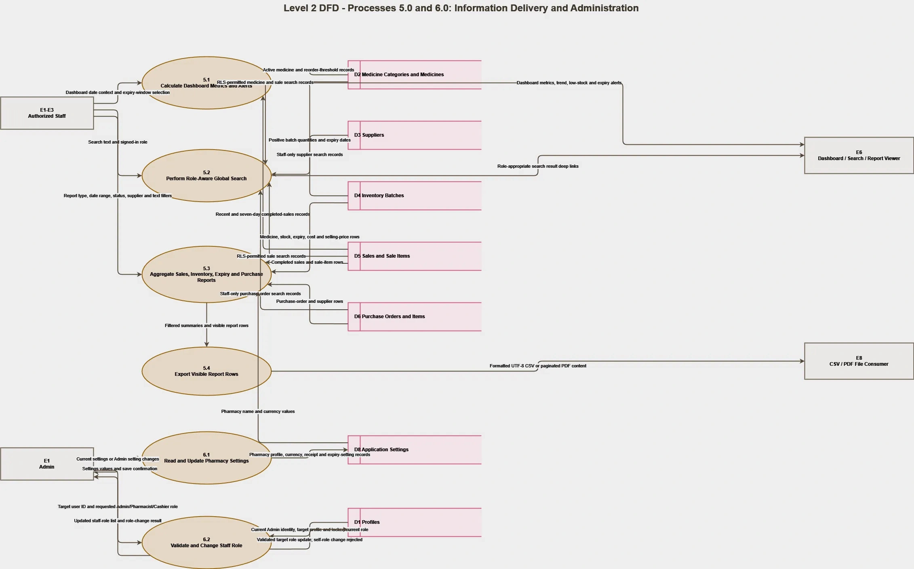
Figure 5. Level 2 DFD for operational reporting, exports, settings, and role administration.
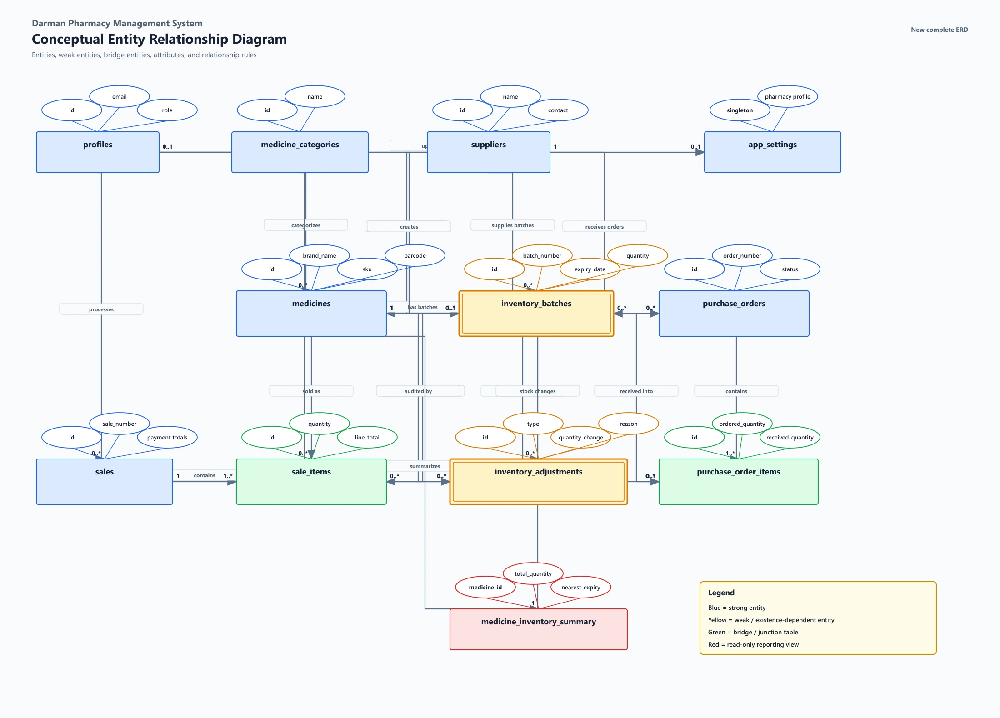
Figure 6. Conceptual ER model of staff, medicines, suppliers, inventory, sales, purchases, settings, and adjustments.
The application uses the Next.js App Router for server-rendered routes, protected navigation, and client-side interactive modules. Browser components use TanStack Query for server-state caching and mutations. React Hook Form and Zod provide controlled input handling and validation.
Supabase provides PostgreSQL, email-and-password authentication, and browser-accessible APIs. Separate server and browser clients preserve the correct session context. Public Supabase keys are allowed in the browser, while RLS is the database security boundary. No service-role key is exposed to the client.
Vercel hosts the Next.js application. Supabase hosts authentication and relational data. Production configuration requires the Supabase URL and one publishable or legacy anonymous key, plus the final application URL in Supabase Auth settings.
| Object | Purpose |
|---|---|
| profiles | Staff identity, active status, and Admin, Pharmacist, or Cashier role. |
| medicine_categories | Reusable category records for catalog organization. |
| suppliers | Supplier identity, contact information, notes, and active status. |
| medicines | Medicine master data, prices, barcode, reorder level, supplier reference, and status. |
| inventory_batches | Batch-level stock, expiry, received date, quantity, and historical cost or selling price. |
| sales | Sale header, cashier, payment method, subtotal, discount, total, status, and timestamps. |
| sale_items | Medicine and allocated batch details for each completed sale. |
| purchase_orders | Supplier order header, dates, status, totals, creator, and receiver information. |
| purchase_order_items | Ordered medicine, quantity, pricing, receiving, batch, and expiry details. |
| inventory_adjustments | Auditable stock changes linked to sales, purchases, or future controlled adjustments. |
| app_settings | Pharmacy identity, currency, receipt note, and expiry warning configuration. |
| medicine_inventory_summary | Database view that summarizes inventory for efficient operational reads. |
| Database Function | Responsibility |
|---|---|
| complete_sale | Locks eligible batches, allocates stock by earliest expiry, recalculates trusted totals, creates sale records, deducts stock, and logs adjustments. |
| create_purchase_order | Validates role and item data, calculates order totals, and creates the order and item records. |
| set_purchase_order_status | Controls valid status transitions and prevents changes that would violate the order lifecycle. |
| receive_purchase_order | Locks the order, validates delivery details, rejects repeat delivery, creates batches, updates stock metadata, and records adjustments atomically. |
| change_user_role | Allows active Admin users to change another user's role while blocking self-role changes. |
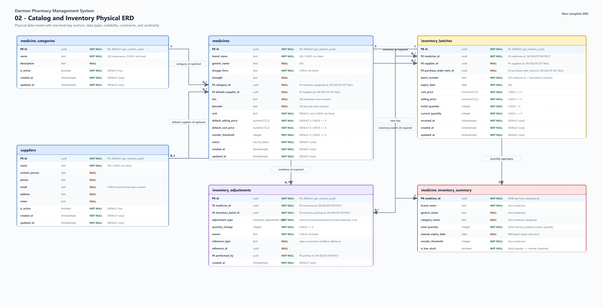
Figure 7. Physical database design for categories, medicines, suppliers, batches, and inventory summary data.
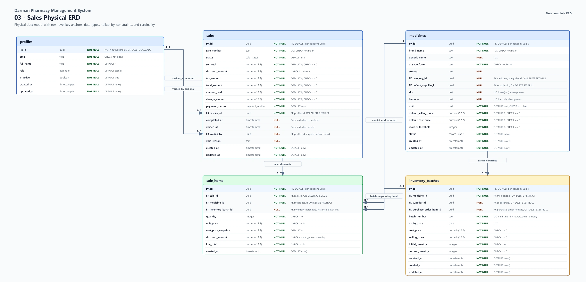
Figure 8. Physical database design for sales and batch-level sale items.
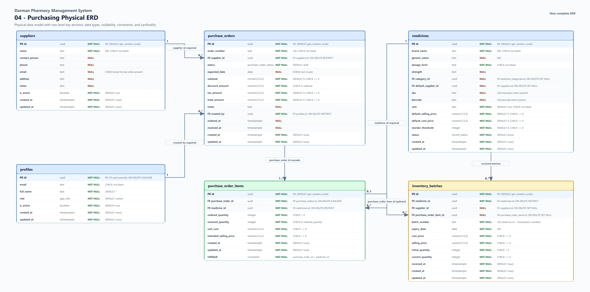
Figure 9. Physical database design for suppliers, purchase orders, order items, and received inventory.
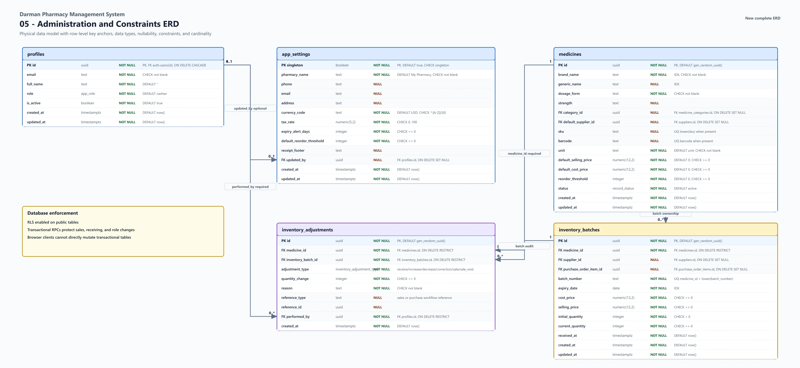
Figure 10. Physical database design for profiles, settings, inventory adjustments, and the inventory summary view.
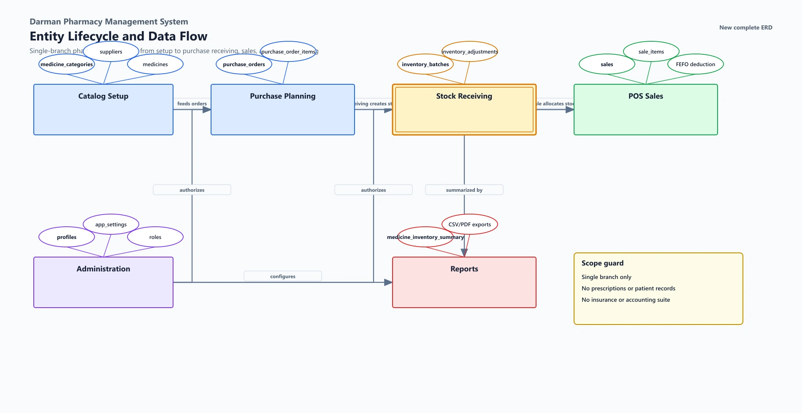
Figure 11. Data lineage from master records through purchasing, stock batches, sales, reporting, and audit records.
The technology selection prioritizes maintainability, type safety, secure managed infrastructure, responsive interfaces, and low initial operating cost.
| Area | Tool or Technology | Use in the Project |
|---|---|---|
| Application framework | Next.js 16 App Router | Routes, layouts, server rendering, protected navigation, and production builds. |
| Programming language | TypeScript | Static typing for application, forms, queries, and database-facing code. |
| User interface | React 19, Tailwind CSS, shadcn/ui, Radix UI | Responsive pages, accessible controls, dialogs, tables, and reusable interface patterns. |
| Database | Supabase PostgreSQL | Relational schema, constraints, views, transactions, functions, and Row Level Security. |
| Authentication | Supabase Auth | Email-and-password sessions for controlled staff accounts. |
| Server state | TanStack Query | Fetching, caching, mutation handling, and targeted refresh after changes. |
| Forms and validation | React Hook Form and Zod | Validated forms with clear field-level error messages. |
| Charts | Recharts | Simple dashboard trends and operational visualization. |
| Document export | jsPDF and CSV generation | Receipts and filtered report downloads. |
| Diagramming | draw.io | Editable DFD and ERD documentation. |
| Testing and quality | ESLint, TypeScript compiler, Next.js build, browser and database tests | Code quality, compilation, responsive checks, workflow tests, and release verification. |
| Hosting | Vercel and Supabase | Managed application, authentication, and database hosting. |
| Version control | Git | Change tracking, review, release baselines, and rollback support. |
The estimate uses a student-budget model. Development and design labor are academic contributions and are not billed. Direct expenses cover the resources required to research, develop, test, demonstrate, print, and present the project.
| Item | Quantity | Unit Cost (USD) | Total (USD) | Basis |
|---|---|---|---|---|
| Student development labor | 12 weeks | Academic contribution | 0 | Not billed; represents the student's monograph work. |
| Internet and data | 3 months | 30 | 90 | Development, research, staging, and deployment access. |
| Electricity and equipment use | 3 months | 20 | 60 | Estimated power and personal computer use. |
| Custom domain | 1 year | 20 | 20 | Optional professional project address. |
| Printing and binding | 1 set | 25 | 25 | Proposal, monograph, and presentation copies. |
| Testing and demonstration materials | 1 allowance | 15 | 15 | Sample labels, barcode tests, and presentation preparation. |
| Contingency | 1 allowance | 20 | 20 | Unexpected academic or deployment expenses. |
| Total estimated direct cost | 230 | Student out-of-pocket project estimate. |
| Item | Budget Note |
|---|---|
| Vercel | Free tier is suitable for academic demonstration; paid plans depend on production usage. |
| Supabase | Free tier is suitable for staging; production backup and resource requirements may require a paid plan. |
| Domain renewal | Recurring annual cost depends on the selected registrar and domain. |
| Maintenance | Future production support is outside the student's direct project budget. |
The roadmap organizes the project into twelve weekly milestones. Each week produces a defined output that contributes to the final release candidate.
| Week | Milestone | Main Activities | Deliverable |
|---|---|---|---|
| 1 | Initiation and requirements | Confirm problem, stakeholders, objectives, scope, exclusions, and success criteria. | Approved requirements and scope statement. |
| 2 | Existing-system analysis | Study current workflows, pain points, roles, data, and operational risks. | Problem analysis and process requirements. |
| 3 | Logical and interface design | Prepare DFDs, conceptual ER model, route plan, navigation, and core screens. | Validated logical design and interface direction. |
| 4 | Database foundation | Create tables, relationships, constraints, indexes, profiles, settings, and initial RLS. | Versioned initial migration. |
| 5 | Authentication and roles | Implement sign-in, protected routes, role-aware navigation, and permission handling. | Admin, Pharmacist, and Cashier access. |
| 6 | Medicine and inventory | Build categories, medicine catalog, batch inventory, search, and validation. | Catalog and inventory MVP. |
| 7 | Dashboard and alerts | Implement summary indicators, low-stock warnings, expiry filters, and trend chart. | Operational dashboard. |
| 8 | Sales and POS | Build cashier workflow, barcode input, cart, FEFO sale transaction, history, and receipts. | Protected sales workflow. |
| 9 | Suppliers and purchases | Implement supplier records, purchase orders, statuses, receiving, and stock increases. | Protected purchasing workflow. |
| 10 | Reports and settings | Create reports, exports, search controls, pharmacy settings, and user-role management. | Operational reporting and administration. |
| 11 | Hardening and QA | Run lint, type checks, builds, role tests, RLS tests, concurrency, rollback, responsive, and export tests. | Release candidate and QA evidence. |
| 12 | Deployment and documentation | Deploy staging, prepare production steps, complete user guide, proposal, and presentation evidence. | Staging release and final documentation. |
| Risk | Impact | Likelihood | Mitigation | Residual Risk |
|---|---|---|---|---|
| Unauthorized data access | High | Medium | Role-aware routes, RLS on all application tables, database role checks, disabled public signup, and denial tests. | Low |
| Incorrect stock after concurrent sales | High | Medium | Transactional sale function, batch locking, FEFO allocation, trusted recalculation, and concurrency tests. | Low |
| Partial purchase receiving | High | Medium | Atomic receiving function, order locking, duplicate-batch checks, rollback tests, and duplicate-delivery protection. | Low |
| Expired stock sold | High | Low | Expiry-aware saleable stock, FEFO ordering, expiry validation, and dashboard warnings. | Low |
| User adoption difficulty | Medium | Medium | Beginner-focused interface, limited role menus, clear messages, responsive layouts, and client guide. | Low |
| Cloud service or internet interruption | Medium | Medium | Managed hosting, documented ownership, status monitoring, and operational communication. Offline mode is outside MVP scope. | Medium |
| Backup ownership not assigned | High | Medium | Production launch gate requires named ownership, selected Supabase backup policy, and recovery verification. | Medium until completed |
| Production configuration error | High | Medium | Ordered migrations, documented environment values, Auth URL checklist, staging baseline, and production smoke tests. | Low after deployment checks |
| Schedule pressure | Medium | Medium | Twelve-week milestones, explicit exclusions, modular delivery, and priority on release-critical workflows. | Low |
| Future data growth | Medium | Low | Indexes, pagination, filtered views, and a documented path toward database reporting functions if scale requires them. | Low |
Darman Pharmacy Management System is a focused response to the operational needs of a single community pharmacy. Its design connects medicine records, batch inventory, purchasing, sales, alerts, users, and reports in one controlled system. The scope remains practical by excluding clinical records, prescriptions, insurance, multi-branch management, accounting, and automation features that would weaken the clarity of the first release.
The project demonstrates a complete academic and professional software process: problem analysis, scope control, logical modeling, relational database design, role-based security, transactional workflows, responsive interface design, testing, deployment planning, and user documentation. Staging evidence shows that the release candidate performs its critical workflows correctly. Completion of the stated production setup and backup tasks will prepare the system for controlled real-world use.
The appendix reproduces the complete validated diagram set for review and presentation. The figures are based on the editable draw.io sources and correspond to the release-candidate database and workflows.
| Figure | Diagram |
|---|---|
| 1 | Context Diagram |
| 2 | Level 1 Data Flow Diagram |
| 3 | Level 2 Sales Data Flow Diagram |
| 4 | Level 2 Purchasing Data Flow Diagram |
| 5 | Level 2 Reporting and Administration Data Flow Diagram |
| 6 | Conceptual Entity Relationship Model |
| 7 | Physical ERD: Catalog and Inventory |
| 8 | Physical ERD: Sales |
| 9 | Physical ERD: Purchasing |
| 10 | Physical ERD: Administration, Audit, and View |
| 11 | Entity Lifecycle and Data Lineage |
Figure 1. Context diagram showing the system boundary and its external actors.
Figure 2. Level 1 DFD showing authentication, catalog, inventory, sales, purchasing, reporting, and administration processes.
Figure 3. Level 2 sales DFD showing checkout validation, FEFO allocation, stock deduction, adjustment logging, and receipt generation.
Figure 4. Level 2 purchasing DFD showing order creation, status control, delivery receiving, batch creation, and stock updates.
Figure 5. Level 2 DFD for operational reporting, exports, settings, and role administration.
Figure 6. Conceptual ER model of staff, medicines, suppliers, inventory, sales, purchases, settings, and adjustments.
Figure 7. Physical database design for categories, medicines, suppliers, batches, and inventory summary data.
Figure 8. Physical database design for sales and batch-level sale items.
Figure 9. Physical database design for suppliers, purchase orders, order items, and received inventory.
Figure 10. Physical database design for profiles, settings, inventory adjustments, and the inventory summary view.
Figure 11. Data lineage from master records through purchasing, stock batches, sales, reporting, and audit records.